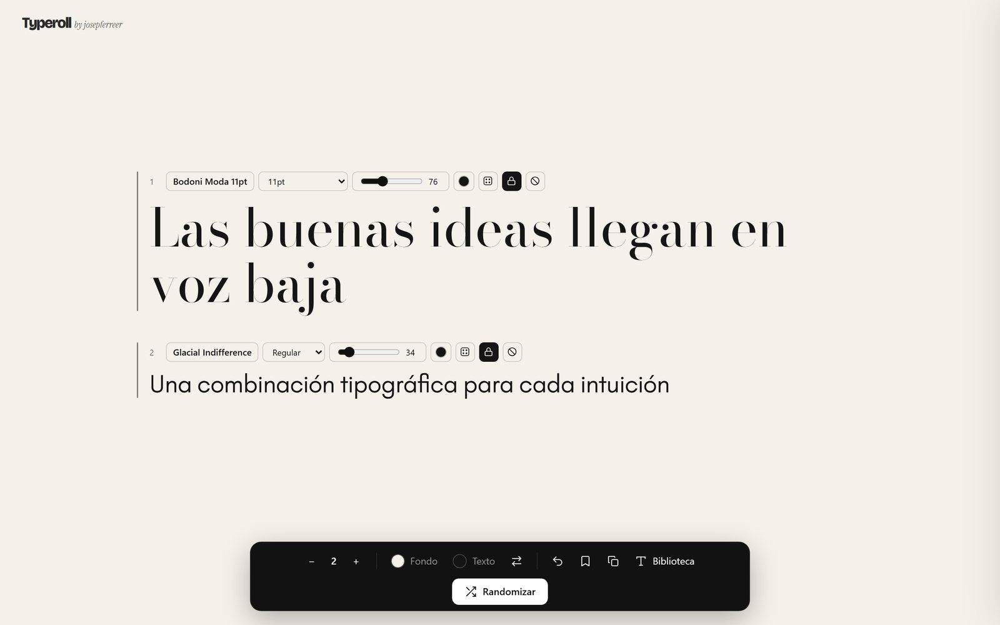
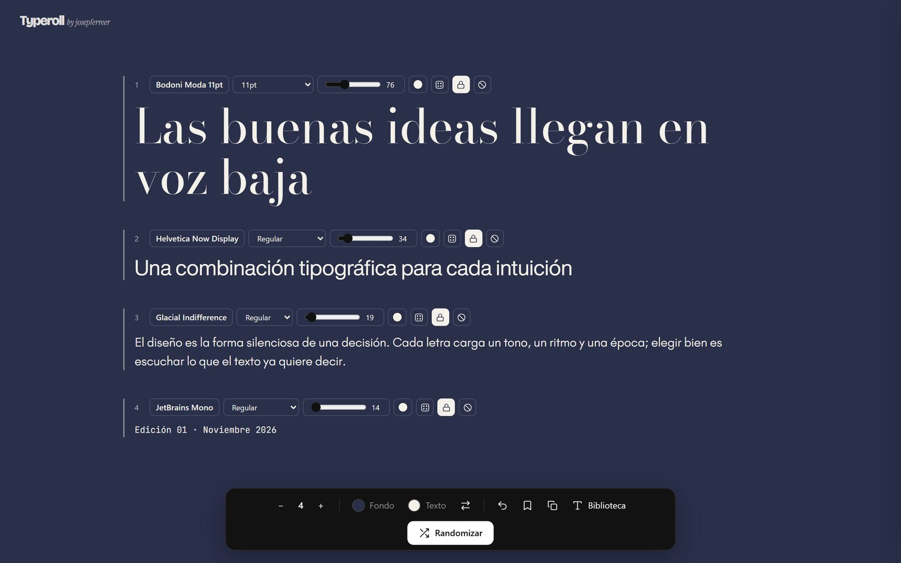
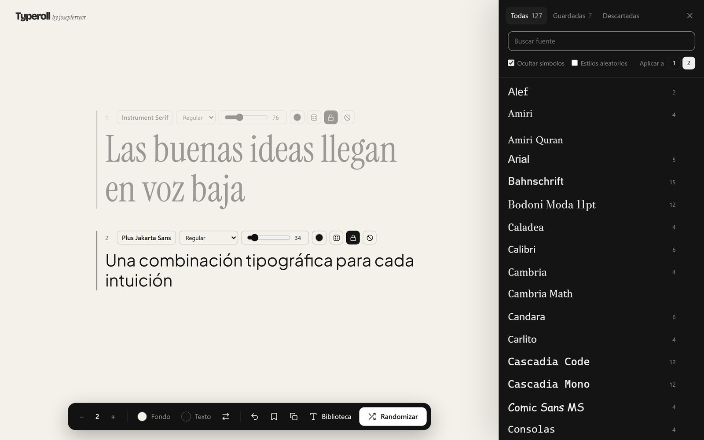
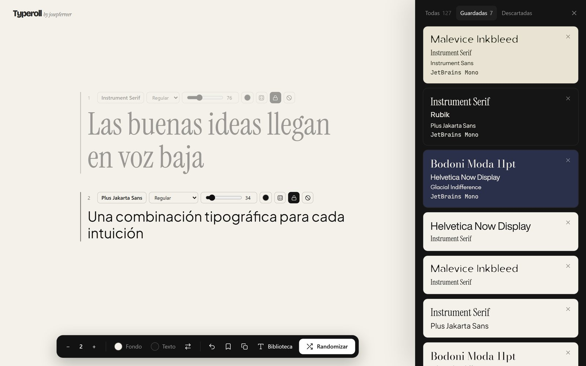

Typeroll
Una ruleta para las fuentes que nunca usas.
- Tipo
- Proyecto propio
- Año
- 2026
- Qué hice
- Diseño
Desarrollo - Con
- HTML y CSS
JavaScript
Tengo cientos de fuentes instaladas y siempre acababa usando las mismas. Typeroll lee las que tienes en el ordenador y te las enseña emparejadas al azar: fijas la que te gusta y sigues tirando hasta dar con la combinación.
Sin instalar nada ni crear cuentas, y sin que tus fuentes salgan de tu ordenador.
Identidad
01Typerollby josepferreer
Typerollby josepferreer
Color
Papel#F4F1EA
Tinta#151515
Tipografía
TyperollBricolage Grotesque ExtraBoldLogo
by josepferreerInstrument SerifFirma
Web
02Ver la webjosepferreer.github.io/typeroll



